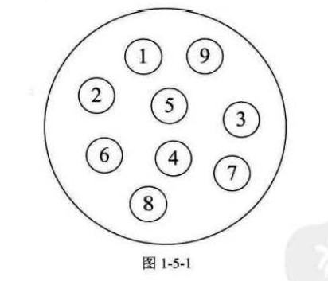
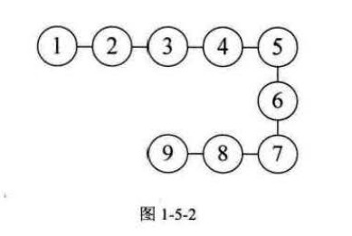
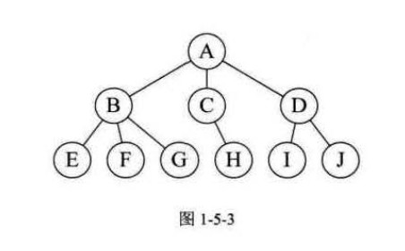
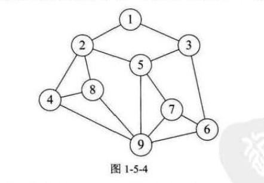
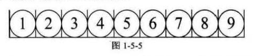
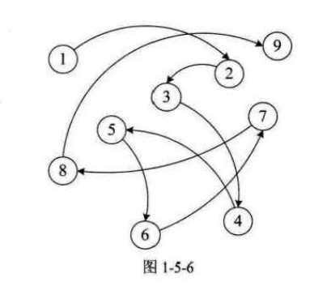
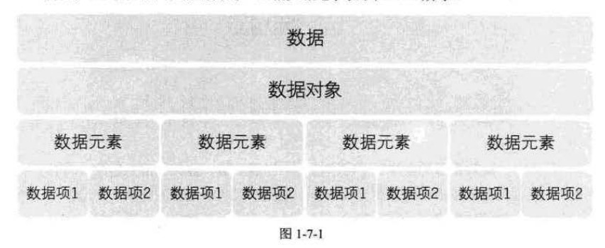
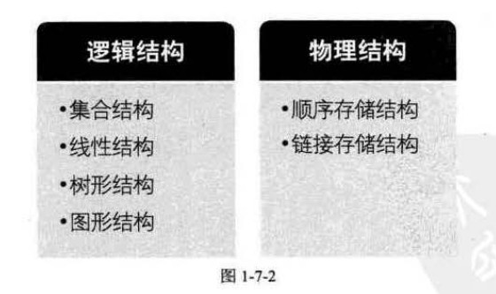

开场白
我不是计算机专业的,之所以打算学习数据结构是为之后做嵌入式编程打下基础,当然也很感兴趣。
你数据结构怎么学的?
学习数据结构是为了是用最简单最高效的方式实现完整的目的,并且做到出错概率最小,比如:实时排队系统可以0使用数组,但数组需要考虑益处,又要考虑新增和删除后的数据移动,所以一般并不使用数组,而是使用”队列结构”。
与此同时,虽然现在很多算法都在编程语言的开发工具包内有完美的实现,但我们单出的掌握其使用方法是远远不够的,因为在将来参加工作会面临着很多新的问题,只有深入的掌握其原理才能在最短的时间内发现问题,并解决问题。
数据结构起源
计算机的发明最初是为了解决数值计算,但随着时代的进步,我们面临的问题与需求也逐渐多元化,需要一些更为科学有效的手段(比如表、树和图等数据结构)的帮助,才能更好地处理问题。所以数据结构是一门研究非数值计算的程序设计问题中的操作对象,以及它们之间的关系和操作等相关问题的学科。
1968年,随着美国高德纳(Donald E. Knuth)教授在其所写的《计算机程序设计艺术》第一卷《基本算法》中，较为系统地阐述了数据的逻辑结构和存储结构及其操作，数据结构的课程体系诞生了。
基本概念和术语
数据
数据：是描述客观事物的符号，是计算机中可以操作的对象，是能被计算机识别，并输入给计算机处理的符号集合。
数据不仅仅包括整型、实型等数值类型，还包括字符及声音、图像、视频等非数值类型。
数据简单地说就是符号，且这些符号必须具备两个前提：
- 可以输入到计算机中
- 能被计算机程序处理
整型、实型等数值类型自然可以进行数值计算，对于字符数据类型就需要进行非数值的处理，而声音、图像、视频等可以通过编码的手段变成字符数据来处理的。
数据元素
数据元素：是组成数据的、有一定意义的基本单位，在计算机中通常作为整体处理。也被成为记录。
数据项
数据项： 一个数据元素可以由若干个数据项组成比如人，人可以视作由眼睛、鼻子、躯干等数据项组成，也可视作由姓名、年龄、性别、出生地址等数据项组成，具体将人视作那些数据项，要根据所做的系统来决定。
数据项是数据不可分割的最小单位但在实际讨论问题时，数据元素才是数据结构中建立数据模型的着眼点。
数据对象
数据对象： 是性质相同的数据元素的集合，是数据的子集。
性质相同是指元素具有相同数量和类型的数据项
在实际应用中，处理的数据元素通常具有相同性质，在不产生混淆的情况下，我们都将数据对象简称为数据
数据结构
结构，简单的理解就是关系，严格的理解就是各个组成部分相互搭配和排列的方式。在现实世界中，不同的数据元素之间不是独立的，而是存在特定的关系，我们将这些关系称为结构。
数据结构： 是相互之间存在一种会哦多种特定关系的数据元素的集合。在计算机中，数据元素并不是孤立、杂乱无序的，而是具有内在联系的数据集合。数据元素之间存在一种或多种特定关系，也就是数据的组织形式。
为编写出一个“好”的程序，必须分析待处理对象的特性及格处理对象之间存在的关系。
逻辑结构与物理结构
按照视点的不同，我们把数据结构分为逻辑结构和物理结构。
逻辑结构
逻辑结构： 是指数据对象中数据元素之间的相互关系。
逻辑结构分为以下四种
1. 集合结构
集合结构： 集合结构中的数据元素除了同属于一个集合外，他们之间没有其他关系。集合结构中,各个数据元素是”平等的”,它们的共同属性是”同属于一个集合”.数据结构中的集合关系类似于数学中的集合.

2. 线性结构
线性结构:线型结构中的数据元素之间是一对一的关系(如图1-5-2)

3. 树形结构
树形结构: 树形结构中的数据元素之间存在一种一对多的层次关系(如图 1-5-3所示).

4. 图形结构
图形结构: 图形结构的数据元素是多对多的关系(如图1-5-4所示)

物理结构
物理结构: 又叫存储结构,是指数据的逻辑结构在计算机中的存储形式.
数据是数据元素的集合,纳闷根据物理结构的定义,实际上就是如何把数据元素存储到计算机的存储器中。存储器主要是针对内存而言的，向硬盘、软盘、光盘等外部存储器的数据组织通常用文件结构来描述。
数据的存储结构应正确的反应数据元素之间的逻辑关系，这才是最为关键的。
数据元素的存储结构(物理结构)有两种:顺序存储和链式存储。
1.顺序存储结构
顺序存储结构： 是吧数据元素存放在地址连续的存储单元里，其数据减的逻辑关系和物理关系是一致的（如图 1-5-5所示）

数组就是一个典型的顺序存储结构
2.链式存储结构
但在实际应用中,顺序结构会有很多难以解决的问题,就像排队一样,总会有人要插队,会有人放弃排队,会有人叫别人来替他排队,在这种时刻变化的结构中,顺序结构就显得有些捉襟见肘了.
链式存储结构: 是把数据元素存放在任意的存储单元中,这组存储单元可以使连续的,也可以是不连续的.数据元素的存储关系并不能反映其逻辑关系,因此需要用一个指针存放数据元素的地址,通过地址就可以找到相关联数据的位置(如图1-5-6所示)

相较之下,链式存储更加灵活,只需一个存放了相应地址的指针就能与之关联.
逻辑结构是面向问题的,而物理结构是面向计算机的,其基本目标就是将数据及其逻辑关系存储到计算机的内存中.
抽象数据类型
数据类型
数据类型: 是指一组性质相同的值的集合及定义在此集合上的一些操作的总称.
C语言中,按照取值的不同,数据类型可以分为两类:
- 原子类型: 是不可以再分解的基本类型,包括整型、实型、字符型等。
- 结构类型： 由若干个类型组合而成，是可以再分解的。例如，整型数组是由若干整型数据组成的。
在进行编程时，我们一般无须考虑计算机的内部是如何表示的，但无论何种计算机、何种计算机语言，大都汇面临着整数运算、字符运算等操作，我们可以考虑把他们都抽象出来。
抽象是指抽取出失误具有的普遍性的本质。他是抽出问题的特征而忽略非本质的细节，是对具体事务的一个概括。抽象是一种思考问题的方式，它隐藏了繁杂的细节，只保留实现目标所必需的信息。抽象数据类型
对数据类型进行抽象，便形成了抽象数据类型。
抽象数据类型(Abstract Data Type,ADT): 是指一个数学模型及定义在该模型上的一组数据操作。抽象数据类型的定义取决于它的一组逻辑特性，而与计算机内部如何表示和实现并无关系，因此，“抽象”的意义在于数据类型的数学抽象特征。
除了已经定义并实现的数据类型外,程序员们还可以根据自己的需要自己定义数据类型,比如,在计算机绘图中总会有成对出现的x、y和z,我们便可定义这个坐标为一个叫point的抽象数据类型,这样就可以很方便地通过操作一个point数据变量,来操作该点的坐标.
事实上,抽象数据类型体现了程序设计中问题分解、抽象和信息隐藏的特性。抽象数据类型把实际生活中的文艺分解为多个规模小且容易处理的问题，然后建立一个计算机能处理的数据模型，并把每个功能模块的实现细节作为一个对的独立的单元，从而使具体实现过程隐藏起来。
为了便于在之后的讲解中对抽象数据类型进行规范的描述，我们给出了描述抽象数据类型的标准格式：ADT 抽象数据类型名
Data
数据元素之间逻辑关系的定义Operation
操作1初始条件 操作结果描述操作2
......操作n
......endADT
总结回顾
首先,介绍了数据结构的相关概念(如图1-7-1所示):

接着,由这些概念,给出了数据结构的定义: 数据结构是相互之间存在一种或多种特定关系的数据元素的集合,数据结构分为两大类,两大类又包含若干小类(如图1-7-2所示)

最后,介绍了数据接类型及其描述方式.
结束语
稍微回顾了一下目录,内容少的章节勉强可以做到一天一章,内容多的章节也做到至少3天2节,争取在开学之前学完整本书!!!!哈呀!!!!